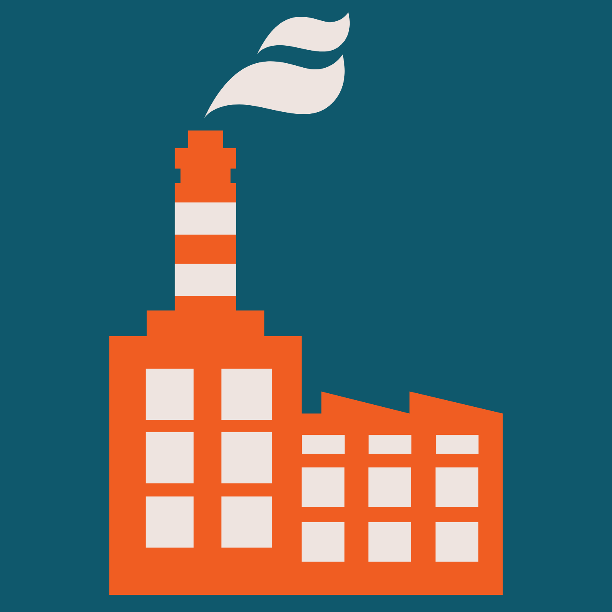

<div class="example-container">
    <mat-toolbar color="primary" class="example-toolbar">
      <button mat-icon-button (click)="snav.toggle()"><mat-icon>menu</mat-icon></button>
      
      <h1 class="example-app-name">ProcessFlux</h1>
      <br>
      <span class="badge badge-pill badge-info">Hi {{userName}}</span>
      <button mat-button class="signout-tab" (click)="logout()" matTooltip="Logout"><mat-icon>exit_to_app</mat-icon>Logout</button>
    </mat-toolbar>
    
    <mat-sidenav-container class="example-sidenav-container" [style.marginTop.px]="mobileQuery.matches ? 56 : 0">
      <mat-sidenav #snav [mode]="mobileQuery.matches ? 'over' : 'side'" [fixedInViewport]="mobileQuery.matches" fixedTopGap="56">
        <mat-nav-list>
          <a [routerLink]="['/admin']" mat-list-item matTooltip="Admin">
            <mat-icon>assignment_ind</mat-icon>
            <span class="list-text">Admin</span>
            <span class="submenu-icon"></span>
          </a>
        </mat-nav-list>

        <mat-nav-list>
          <a [routerLink]="['/crm']" mat-list-item matTooltip="CRM">
            <mat-icon>assessment</mat-icon>
            <span class="list-text">CRM</span>
            <span class="submenu-icon"></span>
          </a>
        </mat-nav-list>
      </mat-sidenav> 
      
      
    </mat-sidenav-container>
</div>